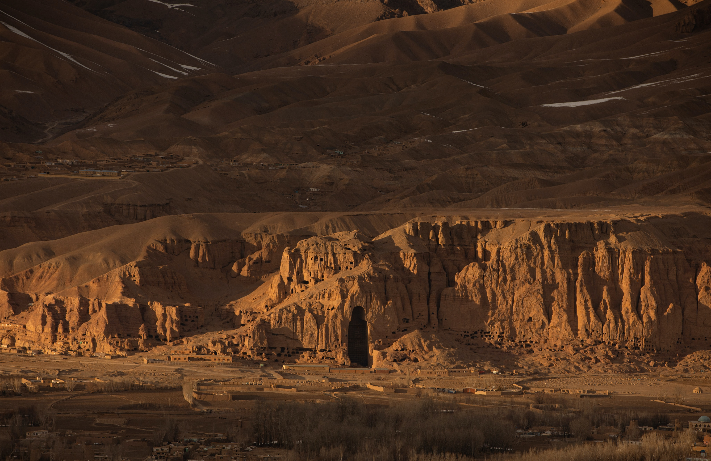
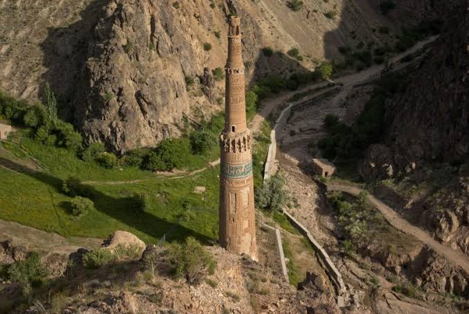
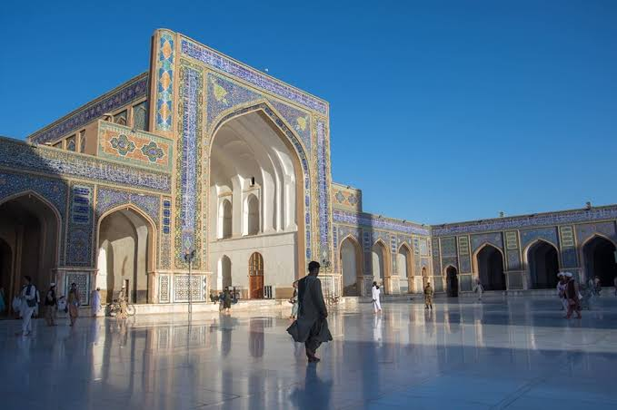
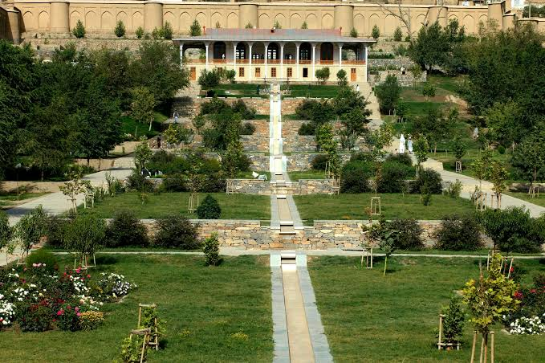
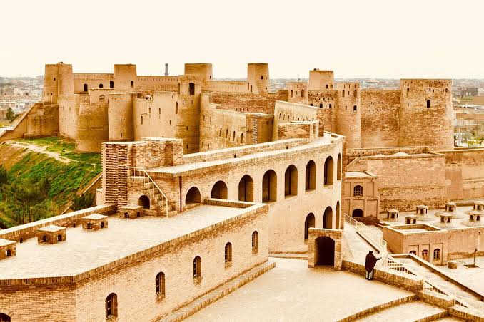

5 Afghanistan Places You Must Visit in 2022
The land-locked nation of Afghanistan is a prominent Islamic state in South Central Asia. The country has been inhabited since the ancient times and you will find really old monuments and structures here to prove this point. The diverse landscape and these amazing sites make Afghanistan an interesting destination to visit especially for history buffs. You will be stunned with the beauty of the architecture across the nation–a result of several rulers who made it their home and built structures as per their liking. This profound influence of the ruling dynasty is seen throughout the city. Out of a long and fairly surprising list of attractions, we have handpicked the top historical places in Afghanistan for your next trip.
1.Buddhas of Bamyan
The 6th-century Buddhas of Bamyan lie in the Hazarajat region of central Afghanistan. You will find monumental sized statues of Gautam Buddha, an Indian saint, carved in monolithic cliffs in the Bamyan valley at an elevation of 2,500 m (8,200 ft). The art represents the ancient art form of Gandhara school and is totally remarkable. The statues are built in sandstone cliffs although straw and stucco were also used. Like other monuments, the site witnessed destruction and renovation with time and new rulers in Afghanistan but never did it lose its cultural and tourism significance.

2.Minaret of Jam
If you visit Ghor province in Afghanistan, don’t forget to visit UNESCO World Heritage Site, the Minaret of Jam. Geographically, it lies in the Shahrak District, next to the Hari River. It is believed that in the ancient times, the muezzin called for the prayer from this tower. The minaret walls are decorated with alternating bands of kufic and naskhi calligraphy, geometric patterns, and verses from the Quran. The circular minaret rests on an octagonal base with two wooden balconies and also had a lantern.

3.Herat Central Mosque
The Great Mosque of Herat or "Jami Masjid of Herat", is a mosque in the city of Herat, in the Herat Province of north-western Afghanistan. It was built by the Ghurids, under the rule of Sultan Ghiyath al-Din Muhammad Ghori, who laid its foundation in 1200 CE.

4.Babur Garden
One of the most gorgeous places to visit in Afghanistan is the Gardens of Babur in Kabul. The site is also the resting place of resting of the first of Mughal rulers, Zahir-ud-din Muhammad Babur. Developed in 1528, the garden truly flaunts the Mughal style of architecture. The grandeur of the Mughal style of art and way of living are not hidden from the world now and the garden is just another necessity for the former king. The garden has the tomb of Babur and also a mosque which was built for prayers.

5.Herat Citadel
Dating back to as early as 330 BC is the jaw-dropping Citadel of Alexander in the heart of Herat Afghanistan. The Citadel of Herat was built by Alexander when he arrived with his army in Afghanistan after the Battle of Gaugamela. Later, various other empires used it as headquarters and remained so for 2,000 years during which it witnessed much destruction and subsequent rebuilding by the ruling dynasties. It was in 1976 that the UNESCO excavated and restored the citadel. In recent years several international organizations decided to completely rebuild it. Now it also houses the National Museum of Herat. Its historical significance makes it a not-to-be-missed place in Afghanistan.
